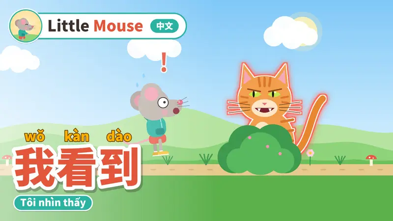
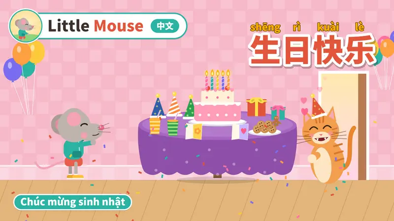
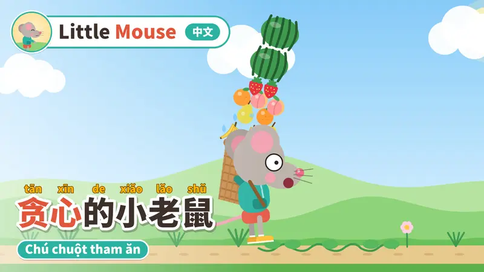
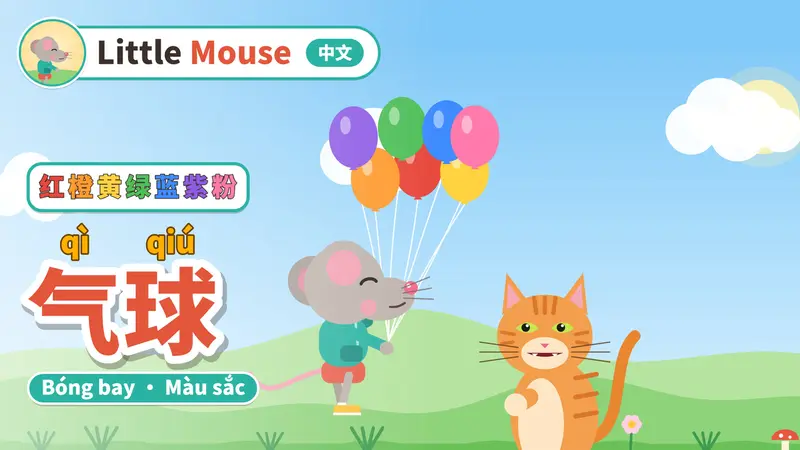
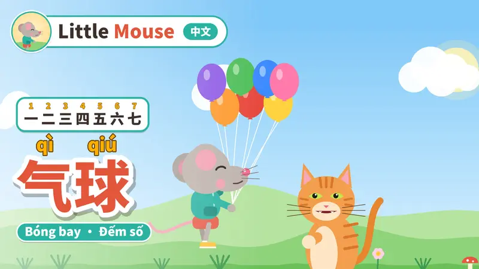

Chuột nhỏ học tiếng Trung
Truyện hoạt hình ngắn cho bé 3–8 tuổi mới bắt đầu học tiếng Trung. Mỗi tập là một mẫu câu lặp lại nhiều lần, pinyin sáng theo từng chữ khi đọc, giọng đọc chậm và rõ để bé nghe, nhìn và nói theo.
Xem và đăng ký kênhNhững tập đầu tiên
Mỗi tập dài khoảng 2 phút: nhạc hiệu, câu chuyện, ôn lại từ mới và lời tạm biệt. Tập mới lên vào tối Thứ Ba và Thứ Bảy.
-

我看到Tôi nhìn thấy Đá, kiến, hoa, bướm, ong, cây… và một con mèo. -

生日快乐Chúc mừng sinh nhật Trên bàn có gì nào? Mũ, bánh, nến, quà. -

贪心的小老鼠Chú chuột tham ăn 我要… — 7 loại trái cây và bài học chia sẻ. -

气球Bóng bay · Màu sắc 7 màu sắc, từ đỏ đến hồng. -

气球Bóng bay · Đếm số 我有… — đếm từ 1 đến 7.
Học cùng bé thế nào
Mỗi ngày một tập, xem lại 2–3 lần để bé nhớ lâu hơn.
Cùng xem và nghe
Lần đầu chỉ cần xem cùng bé, chưa cần đọc theo.
Chỉ vào chữ đang sáng
Lần hai, chỉ tay theo pinyin đang sáng và đọc theo chuột nhỏ.
Để bé nói trước
Ở phần ôn cuối tập, tạm dừng trước mỗi thẻ từ để bé nói, rồi nghe lại.